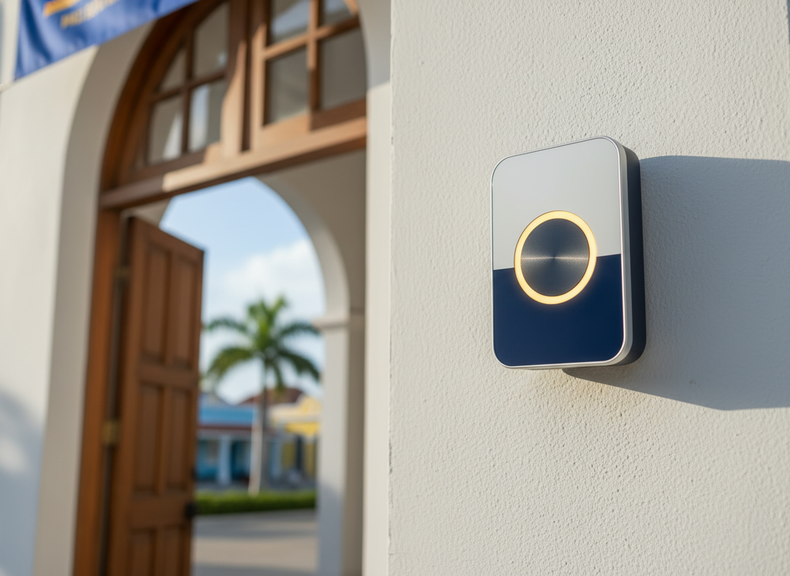
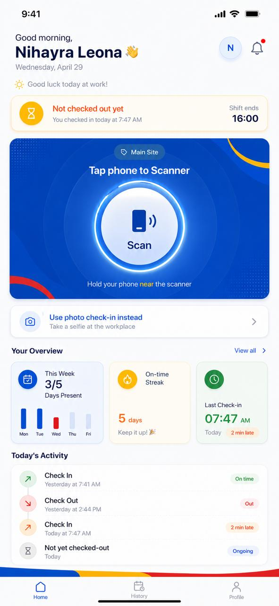

A secure, mobile-first attendance platform that gives every teacher a simple way to check in — and gives school leadership real-time visibility across Curaçao's public schools.
The way schools record attendance today is slow, manual, and error-prone. Here is exactly what the DOS platform replaces — automatically.
Every attendance event flows through a secure platform that gives schools, directors, and DOS leadership a shared source of truth across Curaçao's public education system.

A secure attendance process that takes only seconds — while automatically updating the entire DOS workforce platform.
When a teacher checks in late, the platform flags the arrival, calculates the delay, and notifies administration — instantly, with zero manual work.
The platform automatically detects each campus, keeps separate attendance logs, and unifies everything into one DOS report — no manual switching.
Every teacher, every school, every attendance event, and every payroll-ready hour across the DOS network — visible from a single command center.
Every check-in this platform records automatically becomes a verified, payroll-ready record — no spreadsheets, no manual calculation, no chasing hours.
Attendance is where it starts — not where it ends. Here's what the platform grows into.
Watch one attendance tap travel securely through every layer of the platform — from a teacher's phone to payroll — in real time.
Designed for teachers, administrators and school leadership.

A realistic path from a handful of pilot schools to every public school on the island — watch the DOS network come online, stage by stage.
DOS is building the digital infrastructure for the future of education across Curaçao — and it starts with a single check-in.
DOS isn't just solving attendance.
It's building the future of education in Curaçao.